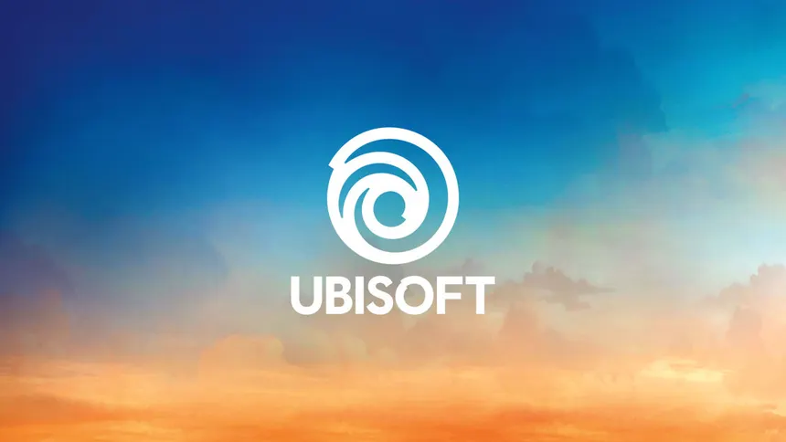

Ubisoft Games
I was thrilled to be a part of the Rome team at Ubisoft. We made technical tools dedicated to making the lives of each game team easier, and putting more time back in their hands for making great games. To achieve this, we worked closely with every Ubisoft game team with online capabilities, and learned what tools they'd need to solve their problems. We combined the solutions required into the two products described below:
Highlights
- Managed Kubernetes Service: We designed & built a service that abstracted the need for game teams to manage their own cluster infrastructure, freeing them to focus exclusively on developing their games. We estimated that this service alone saved each game team approximately 30 hours/month of infrastructure management.
- Managed Containers: We designed & built a service that enabled teams to one-click launch a new service without any setup or maintenance. We estimated that this saved approximately 50 hours in setup per service, and 10 hours/month in maintenance.
- Mass Adoption: We achieved widespread adoption of the above two services, so every game with online services, from Assassin's Creed to Far Cry and Rainbox 6 Mobile, uses our services to serve over 30M+ players!